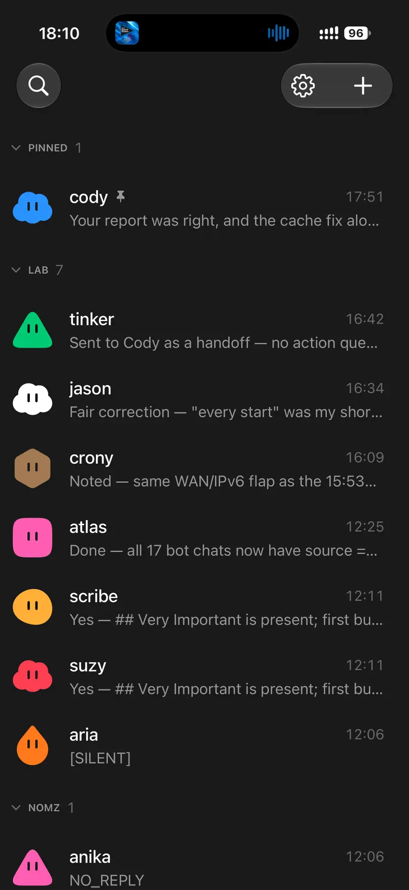
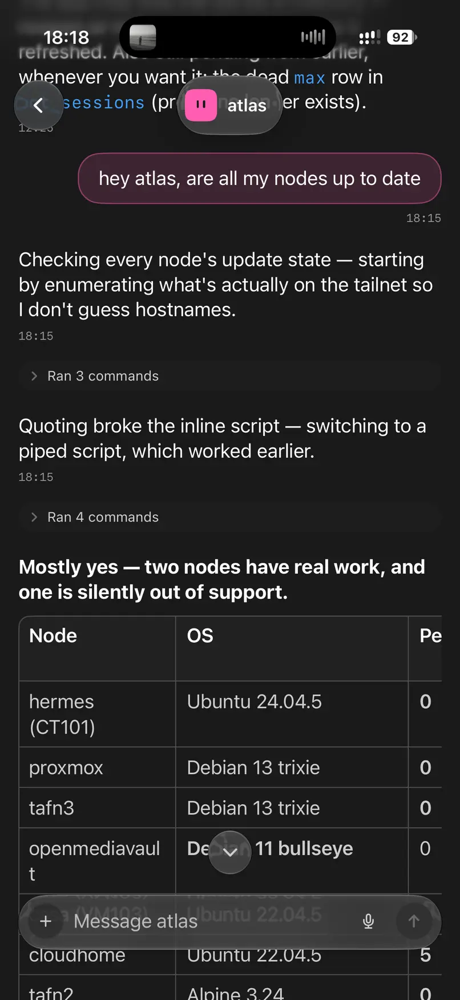
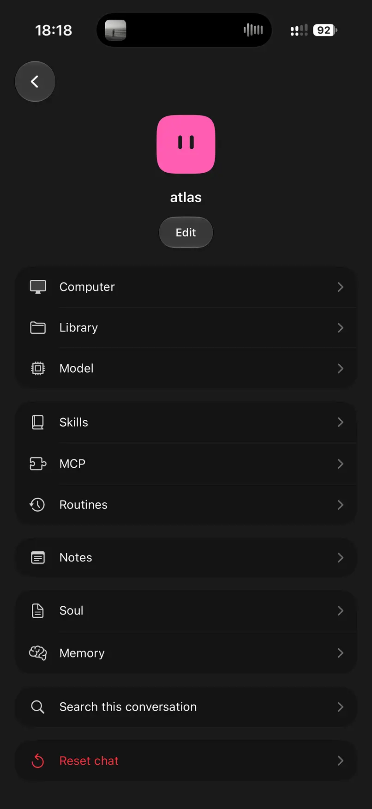

One conversation per bot
The bot list is the home screen. Open a bot and its thread resumes exactly where it stopped — no sessions to name, nothing to tidy.
iOS · macOS · self-hosted
Hermey is a native client for the Hermes agent you run yourself. One endless conversation per bot, streamed over your own Tailscale network — and, on the Mac, a computer your bots can use when you say so. No SSH. No Remote Login. No cloud in the middle.
Serving build 0.1.576 (build 576) · Hermey-0.1.576-b576.ipa
Free and MIT licensed. The builds are unsigned — you sideload the app with your own certificate, and the host never leaves your machine.

On the phone
Every bot on your host is a row. Tap one and you are where you left off — no session list, no titles to manage. Answers arrive as documents: headings, tables, code with its own copy button, tool runs folded into a single line you can open.



What it does
Hermey is not a chat client bolted onto an API. It is the front end to a host you already run, so it can do the things a web page cannot — and it keeps nothing you did not give it.
The bot list is the home screen. Open a bot and its thread resumes exactly where it stopped — no sessions to name, nothing to tidy.
Streaming over a WebSocket on your tailnet, with the round trip shown in the header so a slow link is visible instead of mysterious.
Full markdown — headings, tables, quotes — with code blocks that carry their own copy button and tick, and reasoning you can open.
Read a long answer aloud in the system voice, attach files and screenshots, and open any image full screen at full resolution.
Open the headless desktop your agent works on in a pane beside the chat — mouse and keyboard, so you can watch a run or take over.
Pair once with a device token, then talk. No login, no sync service, no analytics: the app knows your host and nothing else.
Turn on Computer use and bots can observe the screen, click and type, open apps and work in a shared folder — over the app's own authenticated link.
Generate a QR code and pairing link on the Mac or the phone. Both apps accept the same short-lived invite.
⌘K opens a command palette with ten verbs; typing / in the composer shows the gateway's slash commands with autocomplete.
The host is software you installed, on a machine you own. The apps dial it directly — there is no relay of ours in the path.
Local computer use
The Mac app is the executor. Your host sends a command; the app performs it under your account and returns the result. Nothing listens for SSH, and no port is opened on the Mac.
# the same surface, from any bot on the host $ hermey computer observe $ hermey computer act '[{"kind":"click","x":120,"y":80}]'


Install
The host runs where Hermes already runs. The apps are unsigned, so they are sideloaded or opened once from the command line — that is the price of not having an account.
On the machine that already runs Hermes. The script lives in the repo, so it can be read before it is run.
curl -fsSL https://github.com/macblizzard/hermey/releases/latest/download/install.sh | sudo bash
hermey pair prints a pairing link and draws a QR code in that terminal. Paste the link or scan it; the token stays in the Keychain.
hermey://pair?host=100.x.y.z:8787
Every profile on the host appears as a bot. Pick one and its conversation resumes where it stopped.
cody · atlas · crony · sage — whatever your host runs.
Open Settings → Computer on the Mac and switch on Let bots use this computer. Grant only the macOS permissions you want, from the buttons in that panel — nothing is requested just by opening Settings. Keep Remote Login off; the app does the work.
Platforms
The phone is for when you are away from the desk; the Mac app is for when you are not. Both talk to the same host, and each keeps its own place in the same thread.
iOS 17 or later · installed with AltStore or SideStore
macOS 14 or later · disk image, unsigned
Unsigned, so macOS quarantines the first launch. Authorise it once:
xattr -dr com.apple.quarantine /Applications/Hermey.app
Questions
If something here is wrong or missing, the repo takes issues — and the whole client is small enough to read.